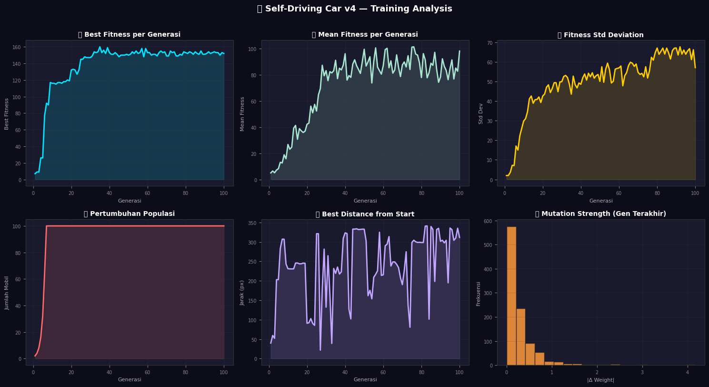
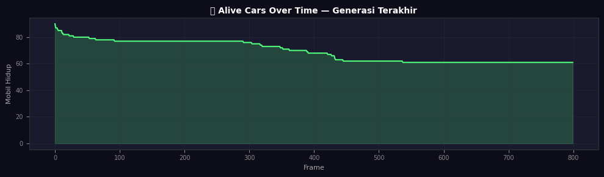
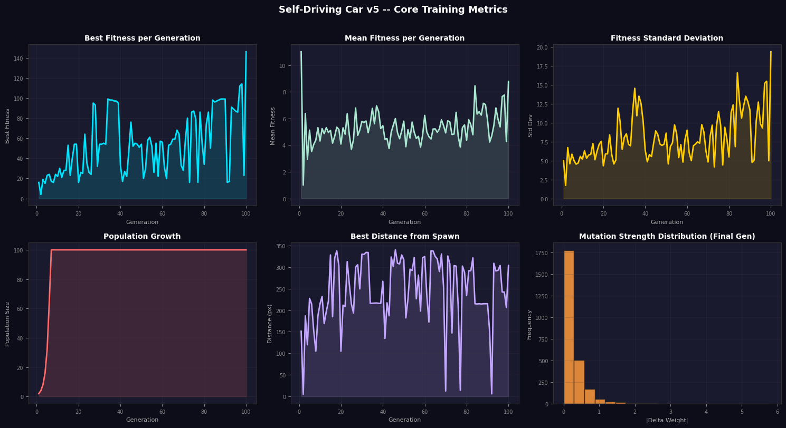
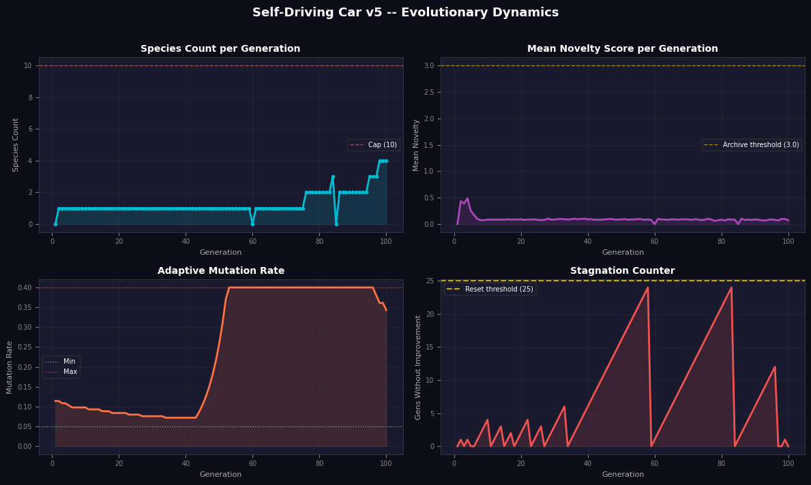

Lingkungan berupa sirkuit oval termodifikasi dengan dimensi 500 x 400 pixel, dirender menggunakan PIL. Geometri lintasan dibentuk melalui superposisi fungsi sinusoidal pada elips dasar untuk menghasilkan enam bump:
Faktor 0.6 pada sumbu-y menghasilkan asimetri vertikal yang membuat sirkuit tidak terlalu simetris secara geometri. Spawn point agen ditentukan melalui scan vertikal yang memverifikasi ketersediaan lintasan pada radius ±10 pixel.
Setiap agen dilengkapi 7 ray-cast sensor yang dipancarkan pada sudut relatif terhadap orientasi kendaraan:
Controller diimplementasikan sebagai 2-layer feedforward neural network. Total parameter genome adalah 82.
Fitness diukur berdasarkan coverage area yang dikunjungi selama satu episode, bukan jarak point-to-point. Visited cells dikuantisasi pada resolusi 10x10 pixel.
Populasi dimulai dari 2 individu dan berkembang eksponensial dengan cap di 100:
Seleksi menggunakan Top-K pool dengan K=10. Satu elit disalin langsung tanpa mutasi (strict elitism):
Reproduksi menggunakan uniform crossover, di mana setiap parameter diinherit secara independen dari salah satu parent:
Mutasi dirancang sebagai two-tier stochastic perturbation. Sebesar 10% dari mutasi yang terjadi masuk ke chaos regime dengan strength lebih besar:
Perbandingan parameter mutasi antara versi tidak stabil (v3) dan v4.1:
| Parameter | v3 — Unstable | v4.1 — Stable |
|---|---|---|
| Mutation Rate | 0.40 | 0.12 |
| Mutation Strength | 3.0 (fixed) | 0.05 – 0.50 (range) |
| Chaos Probability | 0.30 | 0.10 |
| Chaos Strength | — | 0.50 – 2.00 |
| Selection | Adam & Eve (K=2) | Top-K pool (K=10) |
Tiga bug kritis diperbaiki dari v4.0:
Fix 1 — Reference Safety. random.choice(parent_pool) sebelumnya mengembalikan referensi langsung. Mutasi pada pA atau pB dapat mengkorumpsikan parent pool untuk offspring berikutnya. Solusi: random.choice(parent_pool).copy().
Fix 2 — Actual Mutation Delta Logging. Histogram mutasi sebelumnya diisi nilai sampel buatan, bukan delta aktual. Solusi: catat (child - before_mutation) langsung dari setiap offspring yang diproduksi.
Fix 3 — Population Sync. history[7] tidak menyinkronkan current_pop aktual dari training loop, menyebabkan grafik population growth inkonsisten. Solusi: teruskan current_pop secara eksplisit ke dalam tuple history.
v5 bukan perbaikan incremental dari v4.1. Ini adalah reimplementasi lapisan evolusi secara fundamental. Fondasi — lingkungan simulasi, sensor model, neural network, fitness function — dipertahankan identik. Seluruh perubahan terkonsentrasi pada mekanisme seleksi, reproduksi, dan manajemen diversitas.


Inovasi kritis v5: setiap agen menghasilkan vektor 5-dimensi yang merangkum bagaimana agen berperilaku, bukan hanya seberapa baik. Ini adalah fondasi dari Novelty Search.
Novelty score dihitung sebagai rata-rata jarak Euclidean ke k nearest neighbors dalam behavior space. Pool pencarian mencakup populasi saat ini dan global archive persisten lintas generasi:
Composite fitness menggabungkan raw score dengan novelty pressure:
Genome distance diukur menggunakan mean absolute difference (MAD) di seluruh 82 parameter. Assignment ke species menggunakan prosedur greedy terhadap representatif terdekat:
Slot offspring untuk setiap species dialokasikan secara proporsional terhadap mean fitness-nya:
Mutation rate adalah state variable yang diperbarui setiap generasi berdasarkan sinyal fitness progress. Sistem secara otomatis beralih antara mode eksploitasi dan eksplorasi:
Ketika hard stagnation counter mencapai 25 generasi tanpa improvement pada best fitness, sistem melakukan hard population reset:
Mempertahankan 5 elite menghindari restart amnesia — sistem tidak perlu relearn dari nol, melainkan menggunakan 5 seed solusi terbaik yang sudah diketahui sebagai titik awal.
Setiap agen menghasilkan vektor 5-dimensi yang dinormalisasi: posisi akhir, coverage, mean steering magnitude, dan collision count.
Hitung jarak L2 ke 10 nearest neighbor dalam gabungan populasi dan global archive. Self-distance dikecualikan.
Tambahkan behavioral vector ke archive jika rho_i ≥ 3.0. FIFO eviction jika melebihi 500 entries.
Gabungkan raw fitness dengan novelty pressure menggunakan bobot lambda = 0.15.
Setiap genome di-assign ke species terdekat berdasarkan MAD genome distance. Species baru dibuat jika delta ≥ 1.5 dan pool belum penuh. Species dengan < 2 member dipruning.
Perbarui kedua stagnation counter. Terapkan decay atau boost pada mutation rate. Jika hard counter ≥ 25, jalankan catastrophic reset.
1 global elite tanpa mutasi + 10% random genome injection + sisa slot dibagi proporsional berdasarkan mean fitness per species. Crossover dan mutasi berlangsung strictly intra-species.
| Komponen | v4.1 — Stable GA | v5 — Evolutionary Explorer |
|---|---|---|
| Selection | Global Top-K Pool (K=10) | Species-proportional allocation |
| Fitness Signal | Raw coverage saja | F_raw + 0.15 * novelty_score |
| Mutation Rate | Fixed 0.12 | Adaptive [0.05, 0.40] |
| Stagnation Soft | Tidak ada | Mutation boost setelah 10 gen |
| Stagnation Hard | Tidak ada | Catastrophic reset setelah 25 gen |
| Behavioral Diversity | Tidak ada | Novelty Search + Archive 500 |
| Intra-species Isolation | Tidak ada | Crossover hanya dalam species |
| Diversity Injection | Tidak ada | 10% random genome per generasi |
| Spawn Jitter | ±8 px / ±10 deg | ±20 px / ±25 deg |
| Behavioral Descriptor | Tidak ada | 5-dim normalized vector |
| History Fields | 8 field / generasi | 12 field / generasi |
Seluruh eksperimen berjalan pada satu sirkuit yang di-generate dengan random.seed(42). Policy yang dievolvasi sangat mungkin merupakan memorisasi profil tikungan spesifik sirkuit tersebut, bukan kemampuan generalisasi navigasi. Agen yang terlihat "pintar" pada sirkuit ini kemungkinan besar akan gagal total pada sirkuit dengan geometri yang berbeda meskipun dengan lebar lintasan yang sama. Ini adalah varian dari reward hacking dalam evolutionary setting.
Vektor [x_final, y_final, coverage, mean_steer, collision] adalah aproksimasi kasar dari perilaku agen. Dua agen dengan strategi navigasi yang fundamentally berbeda dapat memiliki descriptor yang sangat mirip jika mereka kebetulan mati di posisi yang sama dengan mean steering yang serupa. Ini disebut descriptor collision — novelty score tinggi tidak menjamin keberagaman strategi yang sesungguhnya.
Metric kompatibilitas delta = mean|theta_A - theta_B| mengukur jarak dalam weight space, bukan dalam behavior space. Dua jaringan dengan weight yang sangat berbeda dapat menghasilkan output identik karena simetri dan redundansi internal. Sebaliknya, perubahan kecil pada satu weight kritis dapat mengubah perilaku secara dramatis. Speciation yang terbentuk mencerminkan kluster dalam weight space, bukan kluster dalam strategy space.
Agen yang bergerak sangat lambat dalam lingkaran kecil berulang-ulang mendapatkan fitness yang sama dengan agen yang maju sepanjang lintasan, selama jumlah unique cells yang dikunjungi sama. Selain itu, area lurus sirkuit memberikan unique cells lebih mudah dibanding tikungan tajam — agen dapat mencapai fitness tinggi tanpa pernah belajar menavigasi tikungan.
Threshold STAGNATION_LIMIT = 25 adalah nilai konstan. Reset yang terpicu pada generasi ke-30 saat populasi masih berkembang memiliki dampak yang sangat berbeda dari reset pada generasi ke-80 saat populasi sudah mature. Selain itu, stagnation counter hanya mengukur best fitness — populasi bisa dalam kondisi aktif berkembang (diversity tinggi, mean fitness naik) namun tetap di-reset hanya karena satu individu terbaik tidak membaik.
Sinyal improved = best_gen > global_best_fitness adalah sinyal biner yang sensitif terhadap satu individu beruntung. Satu mutasi keberuntungan yang meningkatkan best fitness sebesar 1 unit akan men-trigger decay (rate dikecilkan), padahal peningkatan itu tidak signifikan secara statistik. Sebaliknya, ketika best fitness stabil namun mean fitness dan diversity populasi sedang tumbuh pesat, sistem tetap menganggap kondisi ini sebagai stagnasi.
Genome random yang diinjeksikan hampir pasti membentuk species baru karena genome distance dari semua species yang ada akan melebihi threshold 1.5. Setiap generasi berpotensi ada sejumlah species baru dari genome random yang menekan species yang sudah berkembang dalam pool yang dibatasi MAX_SPECIES = 10. Injeksi yang tidak terkontrol dapat merusak ekosistem species yang sedang terbentuk.
random.seed(42) hanya dipanggil sekali di Cell 3 untuk track generation. Komponen stochastic training — spawn jitter, crossover mask, mutation sampling, species assignment, random injection — berjalan tanpa seed yang di-set ulang. Dua run dengan konfigurasi identik akan menghasilkan trajektori evolusi yang berbeda, membuat perbandingan kuantitatif antara v4.1 dan v5 sulit dilakukan tanpa multiple runs.
Setiap agen dievaluasi pada satu episode dengan spawn yang di-jitter secara random. Agen yang kebetulan mendapat spawn yang menguntungkan akan mendapat fitness lebih tinggi dibanding agen dengan genome yang sama baiknya namun mendapat spawn kurang beruntung. Dengan ukuran populasi 100, variance dari spawn jitter ini memengaruhi selection pressure secara signifikan terutama pada generasi awal saat perbedaan fitness antar individu masih sangat kecil.
Pada permukaannya, ini adalah mobil kecil yang belajar mengitari sirkuit. Tetapi secara teknis, sistem yang dibangun di sini adalah miniatur dari beberapa domain riset dan rekayasa yang sangat aktif saat ini.
Industri kendaraan otonom (Waymo, Comma.ai, Tesla) menggunakan simulasi skala besar untuk melatih dan memvalidasi decision policy sebelum diuji di jalan. Pendekatan neuroevolution seperti ini relevan sebagai baseline atau inisialisasi awal sebelum fine-tuning dengan RL — terutama untuk kasus edge dimana reward function sulit dirumuskan secara analitik.
Riset seperti OpenAI's neuroevolution benchmark dan DeepMind's locomotion task menggunakan pendekatan evolusi populasi untuk menemukan gait policy pada robot fisik. Mekanisme yang sama — genome neural network, mutation, crossover, fitness dari behavior — digunakan untuk evolusi cara berjalan robot yang tidak dapat diderivasi secara analitik.
Studio game menggunakan neuroevolution untuk menghasilkan NPC dengan perilaku yang beragam dan tidak terprediksi. Novelty Search khususnya berguna di sini — bukan untuk membuat NPC yang "paling kuat", melainkan untuk menghasilkan NPC dengan behavioral repertoire yang kaya dan mengejutkan pemain.
Google Brain dan DeepMind menggunakan evolutionary algorithms untuk mencari arsitektur jaringan saraf yang optimal — mirip dengan NEAT-style speciation yang diimplementasikan di sini. Prinsip "protecting innovation through speciation" langsung diterapkan dalam NAS untuk mencegah eliminasi prematur arsitektur baru yang belum mature.
Neuroevolution dan novelty search digunakan untuk eksplorasi chemical space dalam drug discovery — mencari kandidat molekul yang strukturnya belum pernah ditemukan sebelumnya (analog dengan novelty archive). Sistem seperti Insilico Medicine menggunakan generative evolution untuk menemukan molekul obat baru.
Sistem kontrol adaptif untuk drone, satellite attitude control, atau industrial process control sering tidak dapat dioptimasi menggunakan gradient karena environment model tidak differentiable. Evolutionary black-box optimization seperti yang diimplementasikan di sini adalah pendekatan praktis untuk domain tersebut.
Seluruh source code tersedia sebagai Jupyter Notebook yang dapat dijalankan langsung di Google Colab tanpa memerlukan GPU.